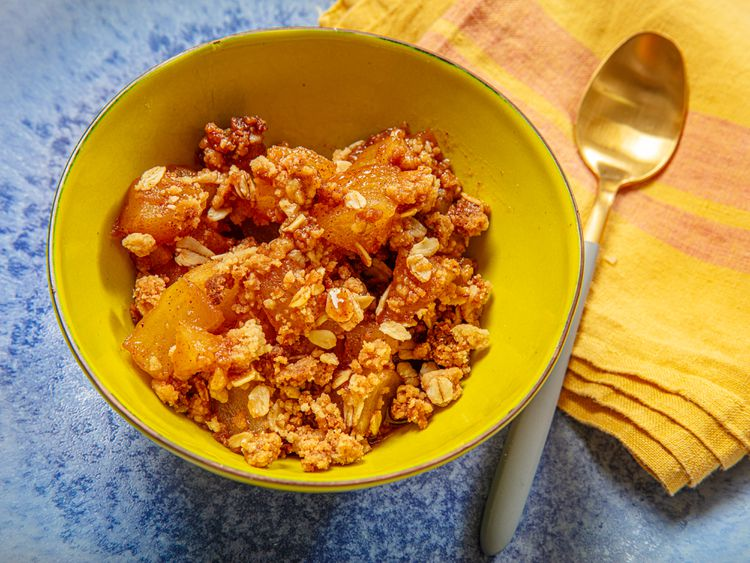

Home
10-Minute Microwave Apple Crisp for One

Description
This might be the easiest apple crisp recipe out there: It requires a handful of ingredients
(most of which you probably already have in your pantry) and one bowl. Plus, the crisp
topping and apple filling are cooked within minutes right in the
microwave—no need to wait for the oven to preheat.
While I take shortcuts to make this crisp, I don't skimp on the flavor one bit.
The bubbly warm apple filling has a light hint of cinnamon and lemon beneath a crunchy,
buttery oat topping. It's wonderful on its own or with a scoop of vanilla ice cream. Here
are my tips for getting it right. Once you try it, I bet this will become a fall
favorite for you as well.
Ingredients
For the Crisp Topping:
- 2 tablespoons all-purpose flour
- 1 tablespoon brown sugar or granulated sugar
- 1 tablespoon old-fashioned rolled oats
- Pinch kosher salt
- 1 tablespoon unsalted butter, cut into 4 pieces
For the Apple Filling:
- 1 apple, peeled, cored, and cut into 3/4-inch pieces
- 2 tablespoons brown sugar or granulated sugar
- 1 teaspoon lemon juice, optional
- 1/2 teaspoon all-purpose flour
- 1/8 teaspoon ground cinnamon or apple pie spice blend
Steps
- For the topping: In a microwave-safe bowl, mix flour, sugar, oats, and salt together.
Using fingers, rub butter into the flour mixture until the mixture has the texture
of coarse breadcrumbs. Microwave on high power, stirring every 30 seconds, until
golden and fragrant, 2 to 3 minutes. Transfer to a plate and let cool slightly
while preparing the filling.
- For the apple filling: In the now-empty microwave-safe bowl, combine apple, sugar,
flour, lemon juice, and cinnamon and microwave until apple is softened and juices
have thickened slightly, 3 to 5 minutes, stirring occasionally.
- Sprinkle topping over the warm filling and serve.